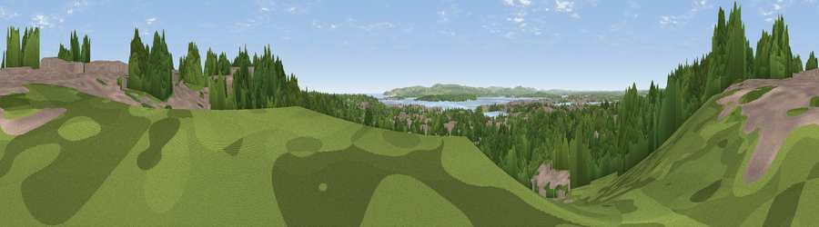

Seaview
#29663 in England · top 53% of its area beats it · near PooleThe view, rendered

A 360° render of this exact spot computed from the terrain model, tree cover and land cover — summer colours, afternoon light, calibrated against photographs of famous viewpoints. Real trees, hedges and buildings will differ in detail.
The panorama
Grey silhouette: terrain skyline in each direction (720 bearings, Earth curvature and refraction included). Dashed green: skyline with trees (+15 m) and buildings (+8 m) as obstacles. Blue strip: how far the ground is visible on each bearing.
Where the view opens
Wedge length = distance to the farthest visible ground on that bearing (vegetation-aware). Rings at 10, 25 and 50 km.
What fills the view
64% woodland · 28% built-up · 4% grassland · 4% water
Angular shares of the visible panorama (visual magnitude), not map area. Landscape diversity 0.41 (0–1 Shannon).
Key numbers
More beautiful places nearby
The staircase of upgrades: each row has a higher view potential than everything closer. Driving times are estimates from straight-line distance, calibrated against real road routing — check an actual route before setting out.
| Place | Direction | Drive | Score |
|---|---|---|---|
| Viewpoint near Poole | NW · 0 km | ~1 min | 55.7 |
| Viewpoint near Merley | N · 4 km | ~10 min | 59.5 |
| Viewpoint near Corfe Mullen | WNW · 6 km | ~13 min | 60.9 |
| Viewpoint near Studland | S · 10 km | ~20 min | 62.6 |
| Viewpoint near Studland | S · 11 km | ~21 min | 82.2 |
| Ballard Down | S · 11 km | ~21 min | 83.2 |
| Viewpoint near Harman's Cross | SSW · 11 km | ~22 min | 84.1 |
| Viewpoint near Kimmeridge | SW · 17 km | ~29 min | 86.6 |
50.72947, -1.95405 · source: osm viewpoint · position refined by local search. Computed location — check access rights before visiting.